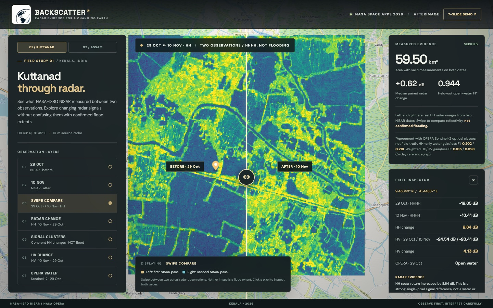

Read the surface.
Question the signal.
A real NISAR radar-change explorer that shows the evidence, the water reference, and what we still cannot know.
Synthetic aperture radar observes microwave scattering. Water, crops, vegetation, rough soil and sensor geometry can all change what it measures.
Measured calibrated L-band backscatter at two dates, including HH and—in Kuttanad—HV evidence. Imaging works through cloud cover and day/night cycles.
That a dark pixel is floodwater, that every change comes from inundation, or that a detected signal implies damage or a public warning.
Show measured change first. Keep separate satellite-derived OPERA classes and leave uncertainty visible.
NISAR HHHH / HVHV
29 Oct → 10 Nov 2026
OPERA optical DSWx-HLS
29 Oct / 05 Nov
Second reference is five days earlier than the second NISAR observation.
NISAR HHHH
28 Oct → 09 Nov 2026
OPERA radar DSWx-S1
31 Oct / 10 Nov
Sentinel-1 references are offset by +3 and +1 days; inundated vegetation is its own class.
Validated NASA data, georeferenced rasters, real measured pixels and reproducible processing—not a simulated flood animation.
Drag across two validated NISAR acquisitions, aligned over the same place.
Click a 30 m cell; compare HH/HV readings, OPERA context and source-date offsets.
Export an evidence note with actual readings, source granules and limitations. Not a flood prediction.

Strong, spatially consistent fading of the HH return. It could have several causes.
Strong, spatially consistent brightening of the HH return. This is not water loss by definition.
No OPERA water label is used to produce these signal clusters. OPERA is used only afterward to diagnose what the method gets wrong.
Fraction of OPERA-classified stable non-water pixels falsely highlighted. ≈93% lower.
Some genuine water-reference transitions were missed. Median filtering alone had slightly better gain F1.
The same conservative rule found none of the strict OPERA-classified water transitions in the Assam case.
This disproves a reliable universal water-change interpretation from our small experiment.
Interpretation: Stronger radar evidence visualization is possible; reliable flood detection remains unproven.
A public two-region NISAR investigation app: before/after swipe, clicked satellite evidence, downloadable source notes, original logo and documented scientific failure cases.
Real NISAR observations bracket the documented October 28 cyclone. OPERA references are ~11.2 hours apart, yet our unchanged signal-clustering method still missed strict open-water transitions.
backscatter-afterimage-2026.pages.dev
Backscatter is an evidence viewer—not a flood warning system or damage-mapping tool. Full methods: /research.html